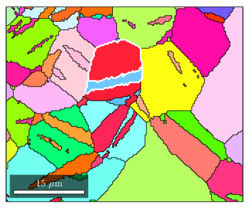
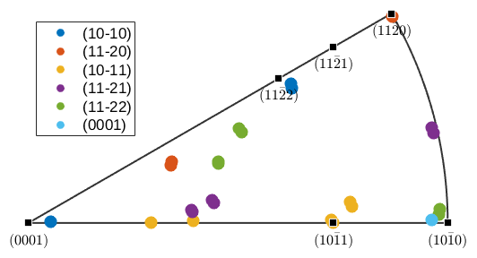
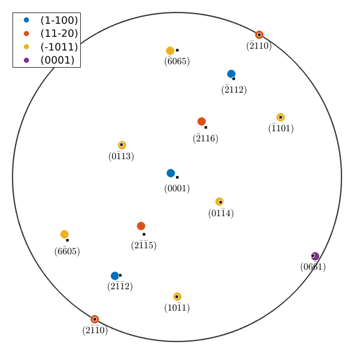
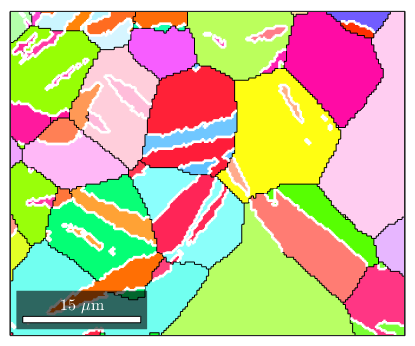
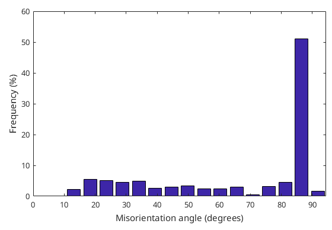

Misorientation describe the relative orientation of two grains with respect to each other. Important concepts are are twinnings and CSL (coincidence site lattice),
| On this page ... |
| Misorientations between grains |
| Coinsident lattice planes |
| Twinning misorientations |
| Highlight twinning boundaries |
| Phase transitions |
Let us import some EBSD data set, compute grains and plot the colorized according to their meanorientation and lets highlight grain 70 and grain 80
mtexdata twins grains = calcGrains(ebsd('indexed')) CS = grains.CS; % extract crystal symmetry plot(grains,grains.meanOrientation) hold on plot(grains([70,80]).boundary,'edgecolor','w','linewidth',2)
grains = grain2d
Phase Grains Pixels Mineral Symmetry Crystal reference frame
1 121 22833 Magnesium 6/mmm X||a*, Y||b, Z||c
Properties: GOS, meanRotation
I'm going to colorize the orientation data with the
standard MTEX colorkey. To view the colorkey do:
oM = ipdfHSVOrientationMapping(ori_variable_name)
plot(oM)
 The misorientation between those two grains can be computed from the meanorientations of the grains. Remember that an orientation always maps crystal coordinates into specimen coordinates. Hence, the product of an inverse orientation with another orientation transfers crystal coordinates from one crystal reference frame into crystal coordinates with respect to another crystal reference frame.
mori = inv(grains(70).meanOrientation) * grains(80).meanOrientation
mori = misorientation
size: 1 x 1
crystal symmetry : Magnesium (6/mmm, X||a*, Y||b, Z||c)
crystal symmetry : Magnesium (6/mmm, X||a*, Y||b, Z||c)
Bunge Euler angles in degree
phi1 Phi phi2 Inv.
149.583 94.2717 150.165 0
In the present case the misorientation describes the coordinate transform from the reference frame of grain 80 into the reference frame of crystal 70. Take as an expample the plane {11-20} with respect to the grain 80. Then the plane in grain 70 which aligned parallel to this plane can be computed by
round(mori * Miller(1,1,-2,0,CS))
ans = Miller size: 1 x 1 mineral: Magnesium (6/mmm, X||a*, Y||b, Z||c) h 2 k -1 i -1 l 0
Conversely, the inverse of mori is the coordinate transform from crystal 70 to grain 80.
round(inv(mori) * Miller(2,-1,-1,0,CS))
ans = Miller size: 1 x 1 mineral: Magnesium (6/mmm, X||a*, Y||b, Z||c) h 1 k 1 i -2 l 0
The coincidence between major lattice planes may suggest that the misorientation is a twinning misorientation. Lets analyse whether there are some more alignments between major lattice planes.
m = Miller({1,0,-1,0},{1,1,-2,0},{1,0,-1,1},{1,1,-2,1},{1,1,-2,2},{0,0,0,1},CS);
close all
% cycle through all major lattice planes
for im = 1:length(m)
% plot the lattice planes of grains 80 with respect to the
% reference frame of grain 70
plot(mori * symmetrise(m(im)),'symmetrised','MarkerSize',10,...
'DisplayName',char(m(im)),'fundamentalRegion','figSize','normal')
hold all
end
hold off
annotate(m,'labeled')
% show legend
legend({},'location','NorthWest','FontSize',13);Warning: Plot empty.
we observe an almost perfect math between the {11-20} lattice planes and the {10-11} lattice planes and good coincidences for the lattice plane {10-10} to {0001} and {11-22}; and for the lattice plane {10-10} to {11-22}. Lets compute the angles explicitly
angle(mori * Miller(1,1,-2,0,CS),Miller(1,1,-2,0,CS)) / degree angle(mori * Miller(-1,0,1,1,CS),Miller(1,0,-1,1,CS)) / degree angle(mori * Miller(0,0,0,1,CS) ,Miller(1,0,-1,0,CS)) / degree angle(mori * Miller(1,1,-2,2,CS),Miller(1,0,-1,0,CS)) / degree angle(mori * Miller(1,0,-1,0,CS),Miller(1,1,-2,2,CS)) / degree
ans =
0.4592
ans =
0.1766
ans =
4.2919
ans =
2.6341
ans =
2.5686
Lets define a misorientation that makes a perfect fit between the {11-20} lattice planes and between the {10-11} lattice planes
mori = orientation('map',Miller(1,1,-2,0,CS),Miller(2,-1,-1,0,CS),... Miller(-1,0,1,1,CS),Miller(1,0,-1,1,CS)) % the rotational axis round(mori.axis) % the rotational angle mori.angle / degree
mori = misorientation size: 1 x 1 crystal symmetry : Magnesium (6/mmm, X||a*, Y||b, Z||c) crystal symmetry : Magnesium (6/mmm, X||a*, Y||b, Z||c) Bunge Euler angles in degree phi1 Phi phi2 Inv. 330 93.7008 330 0 ans = Miller size: 1 x 1 mineral: Magnesium (6/mmm, X||a*, Y||b, Z||c) h -1 k 2 i -1 l 0 ans = 86.2992
Lets plot the same figure as before with the exact twinning misorientation.
for im = 1:length(m) plot(mori * symmetrise(m(im)),'symmetrised','MarkerSize',10,... 'DisplayName',char(m(im)),'fundamentalRegion') hold all end hold off annotate(m,'labeled') % show legend legend({},'location','NorthWest','FontSize',13);
Warning: Plot empty.
It turns out that in the previous EBSD map many grain boudaries have a misorientation close to the twinning misorientation we just defined. Lets Lets higlight those twinning boundaries
% consider only Magnesium to Magnesium grain boundaries gB = grains.boundary('Mag','Mag'); % check for small deviation from the twinning misorientation isTwinning = angle(gB.misorientation,mori) < 5*degree; % plot the grains and highlight the twinning boundaries plot(grains,grains.meanOrientation) hold on plot(gB(isTwinning),'edgecolor','w','linewidth',2) hold off
I'm going to colorize the orientation data with the standard MTEX colorkey. To view the colorkey do: oM = ipdfHSVOrientationMapping(ori_variable_name) plot(oM)
Misorientations may not only be defined between crystal frames of the same phase. Lets consider the phases Magnetite and Hematite.
CS_Mag = loadCIF('Magnetite') CS_Hem = loadCIF('Hematite')
CS_Mag = crystalSymmetry mineral : Magnetite symmetry: m-3m a, b, c : 8.4, 8.4, 8.4 CS_Hem = crystalSymmetry mineral : Hematite symmetry : -3m1 a, b, c : 5, 5, 14 reference frame: X||a*, Y||b, Z||c
The phase transition from Magnetite to Hematite is described in literature by {111}_m parallel {0001}_h and {-101}_m parallel {10-10}_h The corresponding misorientation is defined in MTEX by
Mag2Hem = orientation('map',... Miller(1,1,1,CS_Mag),Miller(0,0,0,1,CS_Hem),... Miller(-1,0,1,CS_Mag),Miller(1,0,-1,0,CS_Hem))
Mag2Hem = misorientation size: 1 x 1 crystal symmetry : Magnetite (m-3m) crystal symmetry : Hematite (-3m1, X||a*, Y||b, Z||c) Bunge Euler angles in degree phi1 Phi phi2 Inv. 120 54.7356 45 0
Assume a Magnetite grain with orientation
ori_Mag = orientation('Euler',0,0,0,CS_Mag)
ori_Mag = orientation
size: 1 x 1
crystal symmetry : Magnetite (m-3m)
specimen symmetry: 1
Bunge Euler angles in degree
phi1 Phi phi2 Inv.
0 0 0 0
Then we can compute all variants of the phase transition by
symmetrise(ori_Mag) * inv(Mag2Hem)
ans = orientation size: 48 x 1 crystal symmetry : Hematite (-3m1, X||a*, Y||b, Z||c) specimen symmetry: 1
and the corresponding pole figures by
plotPDF(symmetrise(ori_Mag) * inv(Mag2Hem),...
Miller({1,0,-1,0},{1,1,-2,0},{0,0,0,1},CS_Hem))
| DocHelp 0.1 beta |